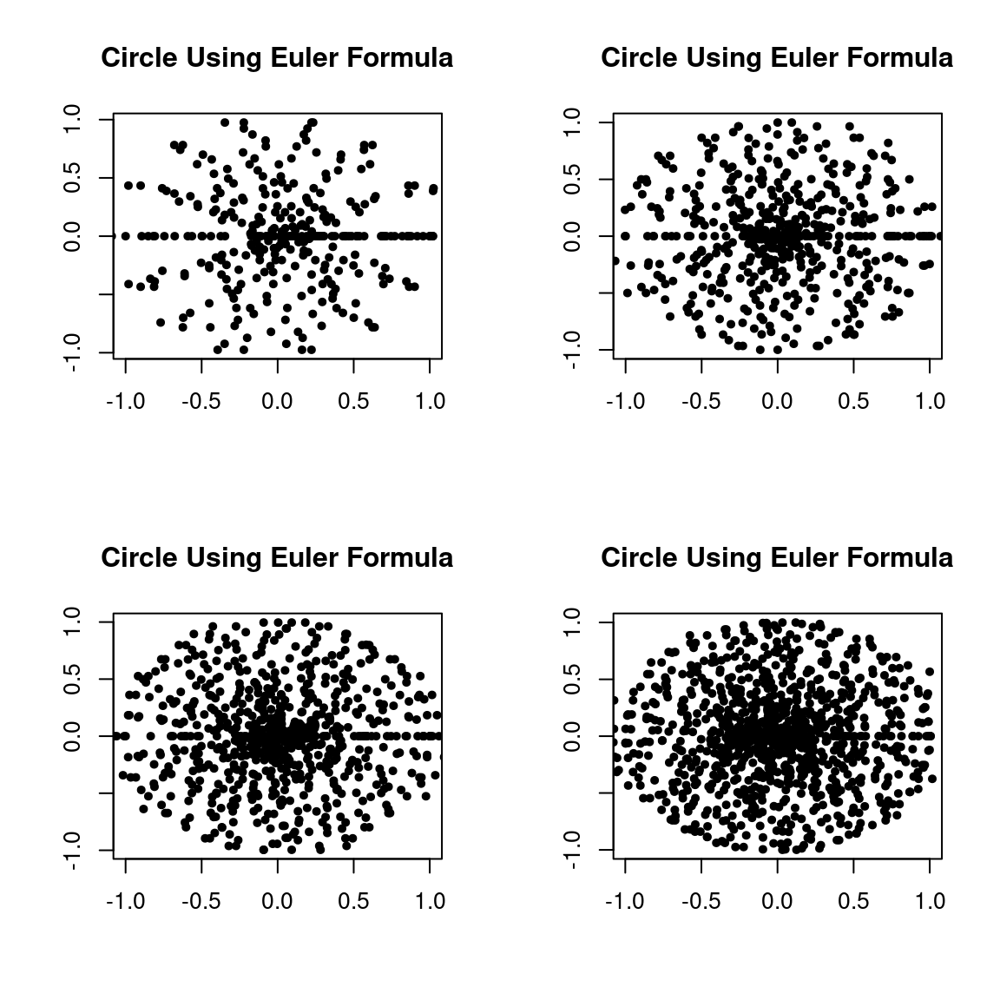

| Abdullah Al Mahmud | docs.statmania.info |

To
Ungrouped Data Range, \(R = X_H - X_L\)
Grouped Data Range, \(R = R_u - R_l\)
\(L_u\) = Upper boundary of the highest class
\(L_l\) = Lower boundary of the lowest class
\(X=\) 14, 10, 2, 25, 21, 9, 19, 27, 16, 13, 12, 7, 20, 18, 17
Ungrouped Data
\(MD(k)=\frac{\sum_{i=1}^n |x_i-k|} n\), not \(MD(k)=\frac{|\sum_{i=1}^n(x_i-k)|} n\); Beware!
Grouped Data \(MD(k)=\frac{\sum_{i=1}^n f_i|x_i-k|} n\)
Compute about mean, median and mode
Variance (\(\sigma^2\)) \[\sigma ^2 = \sum_{i=1}^n \frac{(x_i-\bar x)^2}{n}\]
\(\quad\) = \(\sum \frac{x_i^2}{n}-(\frac{\sum x_i}{n})^2\)
\(\quad\) = Mean of square - square of mean
Standard Deviation (\(\sigma\))
Positive square root of variance
| \(x\) | \(x^2\) |
|---|---|
| 12 | 144 |
| 11 | 121 |
| 3 | 9 |
| \(\sum x = 26\) | \(\sum x^2 = 274\) |
\(\sigma^2\)=Mean of square - square of mean
\(\quad\) =\(\bar {x^2}-{\bar x}^2\)
X = 29, 32, 21, 34, 31, 35, 30, 22
Find variance and stand deviation
\(QD=\frac{Q_3-Q_1} 2\)
\(Q_3-Q_1\) is called Interquartile range.
- Coefficient of Range,\(CR=\frac{X_H-X_L}{X_H+X_L}\times 100= \frac{\text{Range}}{X_H+X_L}\times 100=\frac{X_u-X_l}{X_u+X_l}\times 100\) (grouped)
X = 29, 32, 21, 34, 31, 35, 30, 22
Which college is better?
Who is better?
Exceptions
We know, \(\sigma=\sqrt \sigma^2\) (N:B: \(-2=-\sqrt 4; -2\ne \sqrt 4\))
\(\sigma \ge 0\)
\(\therefore\) Least value of \(\sigma\) is 0.
\(\Rightarrow \frac{\sum(x_i-\bar x)^2}{n} = 0\)
\(\Rightarrow \sum(x_i-\bar x)^2 = 0\)
\(\Rightarrow (x_1-\bar x)^2 + (x_2-\bar x)^2 + \cdots + (x_n-\bar x)^2= 0\)
\(\therefore (x_1-\bar x)^2 =0, (x_2-\bar x)^2=0, (x_n-\bar x)^2=0\)
\(\Rightarrow x_1=\bar x, x_2=\bar x, x_n=\bar x\)
\(\Rightarrow x_1=x_2= \cdots =x_n\)
\(\therefore\) SD is least (i.e., 0) when all values are equal.
| Subject | Bangla | English | Mathematics | Statistics | Average |
|---|---|---|---|---|---|
| Student X | 70 | 70 | 80 | 72 | 72.5 |
| Student Y | 98 | 96 | 48 | 50 | 72.5 |
Who is better?
\(\sigma_x^2=\frac{\sum(x_i-\bar x)^2}{n}\)
Let, \(d_i=\frac{x_i-a}{c}\) (a = origin, c = scale)
\[\begin{eqnarray} &\Rightarrow& x_i=a+cd_i \nonumber \\ &\Rightarrow& \bar x = a + c \bar d \nonumber \\ \end{eqnarray}\]
\[\begin{eqnarray} \sigma_x^2&=&\frac{\sum(x_i-\bar x)^2}{n} \nonumber \\ &=& \frac{\sum(a+cd_i-a-c \bar d)^2}{n} \nonumber \\ &=& \frac{\sum(cd_i-c \bar d)^2}{n} \nonumber \\ &=& \frac{c^2\sum(d_i-\bar d)^2}{n} \nonumber \\ &=& c^2 \sigma_d^2 \nonumber \\ \end{eqnarray}\]
\(\therefore \sigma_x^2=c^2 \sigma_d^2\)
\(MD=SD=\frac R 2\) for \(x_1\ne x_2\) (two unequal observations)
\(\bar x = \frac {x_1+x_2} 2\) and \(R=|x_1-x_2|\)
Mean Deviation,
\[\begin{eqnarray} MD &=& \frac{\sum_{i=1}^2 |x_i-\bar x|}{2} \nonumber \\ MD &=& \frac{\sum_{i=1}^2 |x_1-\bar x|+|x_2-\bar x|}{2} \nonumber \\ &=& \frac{|x_1-\frac{x_1+x_2} 2|+|x_2-\frac{x_1+x_2} 2|}{2} \nonumber \\ &=& \frac{2|\frac{x_1-x_2}{2}|}{2} \nonumber \\ &=& |x_1-x_2| \nonumber \\ &=& \frac R 2 \nonumber \\ \end{eqnarray}\]
Similar process for SD; Start from SD formula
For two unequal observations, \(SD=\frac R 2\)
\[\begin{eqnarray} SD&=&\sqrt{\frac{\sum_{i=1}^2 (x_i-\bar x)^2}{2}} \nonumber \\ &=& \sqrt{\frac{(x_1-\bar x)^2+(x_2-\bar x)^2}{2}} \nonumber \\ &=&\sqrt{\frac{(x_1-\frac{x_1+x_2} 2)^2+(x_2-\frac{x_1+x_2} 2)^2}{2}} \nonumber \\ &=&\sqrt{\frac{(\frac{x_1-x_2}{2})^2+(\frac{x_2-x_1}{2})^2}{2}}\nonumber \\ &=&\sqrt{\frac{2 (\frac{x_1-x_2}{2})^2}{2}}\nonumber \\ &=&\sqrt{\frac{(x_1-x_2)^2} 2}=\frac{|x_1-x_2|}{2} = \frac R 2 \nonumber \\ \end{eqnarray}\]
\[\begin{eqnarray} \sigma^2 &=& \frac{\sum x_i^2}{n} - (\frac{\sum x_i}{n})^2 \nonumber \\ &=& \frac{1^2+2^2+3^2+ \cdots + n^2}{n} - (\frac{1+2+3+ \cdots + n}{n})^2 \nonumber \\ &=& \frac{\frac{n(n+1)(2n+1)}{6}}{n} - (\frac{\frac{n(n+1)}{2}}{n})^2 \nonumber \\ &=& \frac{(n+1)(2n+1)}{6} - (\frac{n+1}{2})^2 \nonumber \\ &=& \frac{n+1}{2} (\frac{2n+1}{3}-\frac {n+1}{2}) \nonumber \\ &=& \frac{n+1}{2} (\frac{4n+2-3n-3}{6}) = \frac{n+1}{2}(\frac{n-1}{6}) = \frac{n^2-1}{12} \nonumber \\ \end{eqnarray}\]
\(\bar X \sqrt{n-1}\ge \sigma\) or \(CV \lt 100 \sqrt{n-1}\)
Tow numbers are 10 and 20; Determine Range and CV
Range, \(R = 20-10=10\)
Find SD and MD of three observations: -3, 0, 3
\[\begin{eqnarray} \sigma&=&\sqrt{\text{Mean of Square - Square of Mean}} \nonumber \\ &=& \sqrt{\frac{9+9}{3}-0}=\sqrt{6}=2.45 \nonumber \\ \end{eqnarray}\]
The mean and SD of 5 observations are 4.4 and \(\sqrt{8.24}\), respectively. If three of the five observations are 1, 2, and 6, find the other two.
\(\frac{9+x_1+x_2}{5}=4.4\)
\(\therefore x_1+x_2=13\)
Again, \(\frac{1^2+2^2+6^2+x_1^2+2^2}{5}-4.4^2=8.24\)
\(\Rightarrow x_1^2+x_2^2=138-41=97\)
\(\Rightarrow (13-x_2)^2+x_2^2=97\)
\(\Rightarrow 169-26x_2+2x_2^2=97\)
\(\Rightarrow x_2^2-13x_2-36=0\)
\(\therefore x_2=9,4; x_1=4,9\)
\(scale, c=\text{Common Difference}\)
\(origin, a = \text{Firts observation - c}\)
\(X = 27, 33, 39, \cdots, 111\)
\(c=33-27 = 6, a = 27-6=21\)
\(Y = \frac{X-21}{6} = \frac{27-21}{6}=1, 2, 3, \cdots, \frac{111-21}{6}=15\)
Visit
https://lecture.statmania.info
to see all lecture slides.